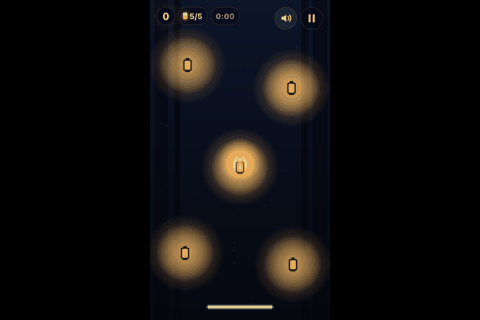
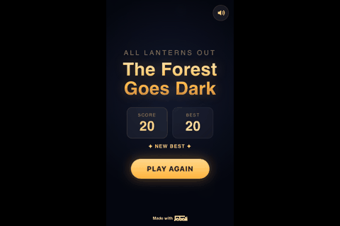
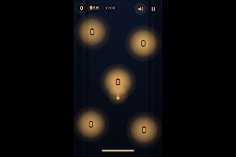
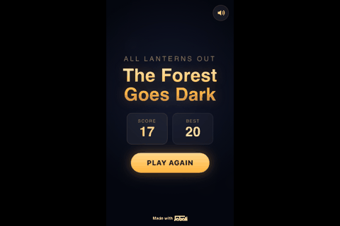
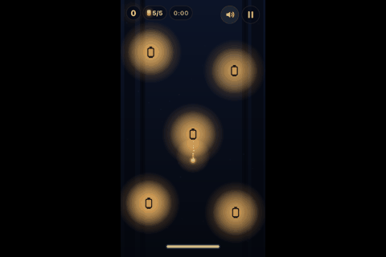
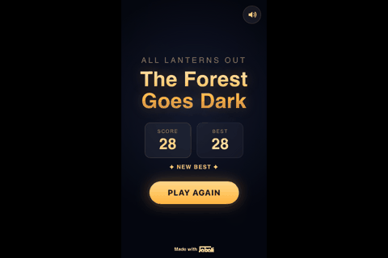

MIXED, fun score 6/10. Tense lantern‑juggling feels good and responsive, but unclear lockout/dash cues and shallow early skill expression cap the fun.
Measured scorecard average: 3.6/5 across 10 dimensions.
| Dimension | Measured | Judge | Signal | Why | Scale |
|---|---|---|---|---|---|
| clarity | 3 | 3 | seconds_to_first_point: 1, start_retries: 0, runs_that_never_started: 0, confusion_notes: 6 | First point came at 1.0s, but there were 6 confusion notes (e.g., "It wasn’t obvious at a glance that the dark lantern I was on was locked"), so the measured score of 3 fits. | first point within 5s = 5, 10s = 4, 20s = 3, 40s = 2, none = 1; minus retries/confusion |
| feedback | 5 | 5 | inputs_checked: 132, reacted_share: 1 | Inputs reacted 100% of the time (reacted_share 1.0; 0/132 unresponsive), matching the 5. | reacted share >= .9 = 5, .75 = 4, .5 = 3, .3 = 2 |
| challenge | 4 | 4 | median_survival_s: 17.4, instant_death_share: 0, timeout_share: 0, runs_cut_by_call_budget: 2 | Median survival was 17.4s with 0% instant deaths; deaths clustered at 15–20s (4 deaths) and 20–25s (2), supporting a brisk but fair 4. | median survival >= 20s = 5, 10s = 4, 5s = 3, 2s = 2; -1 if >30% die in 3s; 2 if almost all runs time out |
| skill_depth | 1 | 1 | skilled_avg_score: 17.5, random_avg_score: 21.67, score_ratio: 0.82, survival_ratio: 0.94 | Skilled avg score 17.5 vs random 21.67 (ratio 0.82) shows button‑mashers did as well or better, so the low 1 is warranted. | (skilled+1)/(random+1) score ratio >= 3 = 5, 2 = 4, 1.3 = 3, 1.05 = 2 |
| learnability | 3 | 3 | player: rules, early_avg: 17, late_avg: 20, trend_per_run: 2.5 | Rules player improved (trend +2.5 per run; early_avg 17 to late_avg 20; best survival 22.33 from 16.77), aligning with 3. | relative gain late vs early runs >= 1 = 5, .4 = 4, .1 = 3, flat = 2 |
| reward_cadence | 5 | 5 | score_events: 142, median_gap_s: 1, longest_gap_s: 2.2 | 142 score events with 1.0s median gap and 2.2s longest gap gives very frequent rewards (5). | median gap between rewards <= 3s = 5, 6s = 4, 12s = 3, 25s = 2; none = 1 |
| variety | 2 | 2 | distinct_screens: 3, per_minute: 1.23, new_screens_in_second_half_of_longest_run: 0 | Only 3 distinct screens at 1.23 per minute and 0 new screens in the second half of the longest run, matching 2. | distinct screens per minute >= 6 = 5, 3 = 4, 1.5 = 3, .5 = 2 |
| fairness | 5 | 5 | deaths_judged: 4, avoidable_share: 1, instant_deaths: 0 | Avoidable_share 1.0, instant_deaths 0; players called deaths fair (e.g., "I dashed too late"), so 5 fits. | share of deaths the player says were avoidable |
| replay_pull | 4 | 4 | answers: 4, 4, 4, 4, 4, 4, average: 4 | Average 'play again?' = 4 across 6 answers (all were 4). | average answer to 'play again?' |
| delivers_design | 4 | 4 | seen: Lanterns burn down, Relight by touching, Dash with meter, Relight lockout, Game over when none lit, never_seen: Waves escalate, Timed drops/events | 5/7 mechanics seen (e.g., 'Relight lockout'); 'Waves escalate' and 'Timed drops/events' were never seen, giving 4. | share of coded mechanics reached in play |
| Metric | All | random | rules | vision |
|---|---|---|---|---|
| runs | 9 | 3 | 3 | 3 |
| avg_survival_s | 16.29 | 18.52 | 19.04 | 11.3 |
| median_survival_s | 17.28 | 17.82 | 18.02 | 12.87 |
| best_survival_s | 22.33 | 20.47 | 22.33 | 13.6 |
| avg_score | 17.33 | 21.67 | 19 | 11.33 |
| best_score | 28 | 28 | 22 | 14 |
| win_rate | 0 | 0 | 0 | 0 |
| actions_per_minute | 373.3 | 155.5 | 700.6 | 178.8 |
| avg_time_to_start_s | 0.53 | 0.53 | 0.53 | 0.53 |
| llm_calls | 116 | 0 | 4 | 108 |
| ends | death: 7, budget: 2 | death: 3 | death: 3 | death: 1, budget: 2 |
| Cause of death (grouped) | Count |
|---|---|
| Zero‑lit while other lanterns were locked | 3 |
| Last‑lit faded while en route (late dash) | 1 |
| All lanterns out (unspecified) | 3 |
| Run | Player | Ended | At (s) | Score | Player's account | Avoidable? |
|---|---|---|---|---|---|---|
| 1 | rules | death | 16.77 | 17 | The last lit lantern faded out while I was sitting on a dark lantern that was still locked and couldn’t be relit yet. | True |
| 2 | rules | death | 18.02 | 18 | The last remaining lit lantern (at ~x360,y668) dimmed to zero while I was sitting on it; all other lanterns were already dark and locked, so when that one went out, all lanterns were out at the same time. | True |
| 3 | rules | death | 22.33 | 22 | The last remaining lit lantern dimmed to zero while I was still moving toward it; I dashed too late to keep it alive. | True |
| 1 | vision | death | 12.87 | 13 | The center lantern was instantly extinguished and locked while I was on it, leaving only the top-left lantern lit; a moment later that last lantern burned out, so all lanterns were dark at once. | True |
Profile built from the running page only. Lantern Keeper (Arcade survival (arena)). Goal: Keep at least one lantern burning for as long as possible. Lose: All lanterns go out at the same time. Win: endless. Controls: fly (drag) (None, hold), move left (ArrowLeft, hold), move right (ArrowRight, hold), move up (ArrowUp, hold), move down (ArrowDown, hold), move left (WASD) (KeyA, hold), move right (WASD) (KeyD, hold), move up (WASD) (KeyW, hold), move down (WASD) (KeyS, hold), dash (Space), dash (double-tap) (None).
| State hook | Expression | During play |
|---|---|---|
| score | (() => { const s = game?.scene?.getScene?.('GameScene'); return s ? Math.floor(s.scoreFloat ?? 0) : 0; })() | live (29+ distinct values) |
| playing | (() => { const s = game?.scene?.getScene?.('GameScene'); return !!(s && s.running && !s.over); })() | live (2+ distinct values) |
| over | (() => { const s = game?.scene?.getScene?.('GameScene'); return !!(s && s.over); })() | live (2+ distinct values) |
| player_x | (() => { const s = game?.scene?.getScene?.('GameScene'); return s?.player?.x ?? null; })() | live (50+ distinct values) |
| player_y | (() => { const s = game?.scene?.getScene?.('GameScene'); return s?.player?.y ?? null; })() | live (50+ distinct values) |
| lanterns_total | (() => { const s = game?.scene?.getScene?.('GameScene'); const ls = s?.lanterns || []; return ls.length || 0; })() | constant (5) |
| lanterns_lit | (() => { const s = game?.scene?.getScene?.('GameScene'); const ls = s?.lanterns || []; return ls.reduce((a,l)=>a + (((l?.brightness ?? 0) > 0) ? 1 : 0), 0); })() | live (6+ distinct values) |
| lanterns_out | (() => { const s = game?.scene?.getScene?.('GameScene'); const ls = s?.lanterns || []; const lit = ls.reduce((a,l)=>a + (((l?.brightness ?? 0) > 0) ? 1 : 0), 0); return (ls.length || 0) - lit; })() | live (6+ distinct values) |
| time_s | (() => { const s = game?.scene?.getScene?.('GameScene'); return Math.floor((s?.elapsedMs ?? 0) / 1000); })() | live (21+ distinct values) |
| wave | (() => { const s = game?.scene?.getScene?.('GameScene'); return s?.wave ?? 0; })() | constant (0) |
| dash | (() => { const s = game?.scene?.getScene?.('GameScene'); return Math.floor(s?.dashMeter ?? 0); })() | live (50+ distinct values) |
| dashing | (() => { const s = game?.scene?.getScene?.('GameScene'); return !!s?.dashing; })() | live (2+ distinct values) |
| next_drop_in_ms | (() => { const s = game?.scene?.getScene?.('GameScene'); const eta = (s?.nextDropAtMs ?? 0) - (s?.elapsedMs ?? 0); return Math.max(0, eta); })() | live (50+ distinct values) |
| lanterns | (() => { const s = game?.scene?.getScene?.('GameScene'); const ls = s?.lanterns || []; const now = s?.elapsedMs || 0; return ls.map((l, i) => ({ i: (l?.index ?? i), x: l?.x ?? 0, y: l?.y ?? 0, b: l?.brightness ?? 0, touching: !!l?.touching, lockedUntil: l?.lockedUntil ?? 0 })); })() | live (50+ distinct values) |
| elapsed_ms | (() => { const s = game?.scene?.getScene?.('GameScene'); return s?.elapsedMs ?? 0; })() | live (50+ distinct values) |
| w | (() => (game?.scale?.width ?? (game?.config?.width ?? 720)))() | constant (720) |
| h | (() => (game?.scale?.height ?? (game?.config?.height ?? 1280)))() | constant (1280) |
| Designed mechanic | Detail |
|---|---|
| Lanterns burn down | Five lanterns slowly lose life/brightness over time; if all go out simultaneously, the run ends. |
| Relight by touching | Touch a lantern with your firefly to sustain or relight it. |
| Dash with meter | Dash gives a fast burst in your facing/aim direction and consumes dash meter; it ends after a short duration. |
| Relight lockout | Recently snuffed lanterns are briefly locked and cannot be immediately reignited. |
| Waves escalate | Difficulty increases over waves, raising the pressure to keep lanterns lit. |
| Timed drops/events | Periodic drops or events occur on a timer. |
| Game over when none lit | If every lantern is out at once, the run ends immediately. |
| # | Player | Ended | Seconds | Score | Inputs | Play again? | Why |
|---|---|---|---|---|---|---|---|
| 1 | random | death | 20.47 | 20 | 60 | - | |
| 2 | random | death | 17.28 | 17 | 42 | - | |
| 3 | random | death | 17.82 | 28 | 42 | - | |
| 1 | rules | death | 16.77 | 17 | 0 | 4 | I want to try again with better routing and an emergency rule to protect the last lit lantern. |
| 2 | rules | death | 18.02 | 18 | 282 | 4 | I want to try a route that keeps two lanterns stable and pre-positions for unlocks/drops. |
| 3 | rules | death | 22.33 | 22 | 385 | 4 | I can do better by camping the last lantern and using dash earlier; the core loop is tense and satisfying. |
| 1 | vision | death | 12.87 | 13 | 23 | 4 | Now that I understand the lockout, I want to try keeping two lanterns buffered and watch the drop timer. |
| 2 | vision | budget | 13.6 | 14 | 25 | 4 | I want to try rotating and dashing between lanterns to keep multiple alive and see if I can avoid sudden budget locks. |
| 3 | vision | budget | 7.43 | 7 | 53 | 4 | I want a proper run to try movement and relighting now that I know about the cooldown. |





